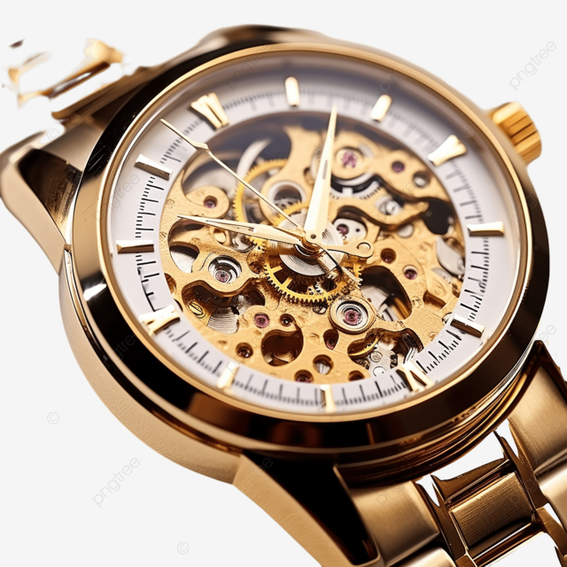

RAMON
Nosso relógio vem equipado com tecnologia muito avançada.
O nome "Anual Sun Phase" vem com inspiração em sua cor mais amarelada e quente.
Relógio
edasdasdasd
Special Events
We want to share the elegant private dining room at the Cafe Fontenebleau flagship restaurant with you! Set in a unique, historic building in Paris, our private dining room is available to host your corporate events, parties, weddings, and more.
Our special events manager, sommelier, and executive chef will work with you to make sure your special event is truly special. We offer multiple menu options, or we can customize a menu for you. In keeping with the award-winning cuisine and exceptional service you expect, we provide place cards, personally printed menus, and candles. We are also happy to help you arrange other services.
Our unique setting, highly personalized service, and memorable dining are the perfect combination for your special event! Please contact us for more information!